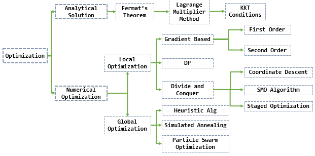
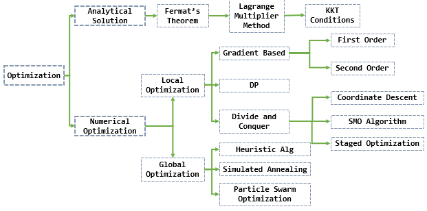

Reproduced in The Summary of Optimization Algorithm in ML
For machine learning algorithms with diverse forms and characteristics, we have various optimization algorithms suitable for optimizing their objective functions. Apart from a few problems that can be solved using Brute Force Search to obtain the optimal solution, we can categorize the optimization algorithms used in machine learning into two types:
Analytical Solutions: These algorithms aim to find the optimal solution to the objective function by solving mathematical equations or performing algebraic manipulations. They often involve setting derivatives or gradients to zero and solving the resulting equations. Analytical solutions are typically used for linear regression, logistic regression, and certain types of optimization problems with closed-form solutions.
Numerical Optimization: These algorithms iteratively search for the optimal solution by evaluating the objective function at different points in the search space. They do not rely on explicit mathematical equations or derivatives. Numerical optimization methods include gradient-based algorithms like gradient descent and its variants, Newton’s method, stochastic gradient descent, and quasi-Newton methods.
Global Optimization Methods:
- Heuristic Algorithm, Simulated Annealing, Particle Swarm Optimization, etc.
Local Optimization Methods:
Gradient Based:
First Order Derivative: (Jacobian)
Gradient Descent: $\theta = \theta - \eta \cdot\nabla J(\theta)$
- whereas Standard Gradient Descent will only converge to the minimum of the basin as mentioned above.
SGD: $\theta = \theta - \eta \cdot \nabla J(\theta;x_i;y_i)$;
- frequent updates, parameters updates have high variance and causes the Loss function to fluctuate to different intensities;
- helps us discover new and possibly better local minima;
- it ultimately complicates the convergence to the exact minimum and will keep overshooting due to the frequent fluctuations;
Mini-Batch GD: ultimately lead us to a much better and stable convergence;
- make use of highly optimized matrix optimizations common to state-of-the-art deep learning libraries that make computing the gradient w.r.t. a mini-batch very efficient.
Challenges in GD:
- Choosing a proper learning rate can be difficult;
- Additionally, the same learning rate applies to all parameter updates. If our data is sparse and our features have very different frequencies, we might not want to update all of them to the same extent, but perform a larger update for rarely occurring features.
- avoiding getting trapped in their numerous sub-optimal local minima; Actually, Difficulty arises in fact not from local minima but from *saddle points*, i.e. points where one dimension slopes up and another slopes down. These saddle points are usually surrounded by a plateau of the same error, which makes it notoriously hard for SGD to escape, as the gradient is close to zero in all dimensions.
Momentum: $V(t) = \gamma\cdot V(t-1)+\eta \cdot\nabla J(\theta)$, then $\theta = \theta - V(t)$;
- leads to faster and stable convergence; reduced oscillations
- Problem: What actually happens is that as we reach the minima i.e the lowest point on the curve ,the momentum is pretty high and it doesn’t knows to *slow* down at that point due to the high momentum which could cause it to miss the minima entirely and continue movie up.
Nesterov accelerated gradient (NAG): $V(t) = \gamma\cdot V(t-1)+\eta\cdot\nabla J(\theta - \gamma\cdot V(t-1))$, then $\theta = \theta - V(t)$；
- In the method he suggested we first make a big jump based on out previous momentum then calculate the Gradient and then make an correction which results in an parameter update. Now this anticipatory update prevents us to go too fast and not miss the minima and makes it more responsive to changes.
- We know that we will use our momentum term γV(t−1) to move the parameters θ. Computing θ−γV(t−1) thus gives us an approximation of the next position of the parameters which gives us a rough idea where our parameters are going to be. We can now effectively look ahead by calculating the gradient not w.r.t. to our current parameters θ but w.r.t. the approximate future position of our parameters
AdaGrad:
- $\theta_{t+1,i} = \theta_{t,i}-\frac{\eta}{\sqrt{G_{t,i}+\epsilon}}\cdot g_{t,i}$, $G_{t,i} = G_{t,i}+\nabla_{\theta_{t,i}}J(\theta)$;
- allows the learning Rate $-\eta$ to adapt based on the parameters. So it makes big updates for infrequent parameters and small updates for frequent parameters. For this reason, it is well-suited for dealing with sparse data.
- At the beginning, AdaGrad has an incentive effect on convergence, and then slowly becomes penalty convergence, and the updating speed is getting slower and slower
- Problem: its learning rate $-\eta$ is always Decreasing and decaying.
- Due to: the accumulation of each squared Gradients in the denominator , since every added term is positive. This in turn causes the learning rate to shrink and eventually become so small, that the model just stops learning entirely and stops acquiring new additional knowledge.
- This problem of Decaying learning Rate is Rectified in another algorithm called AdaDelta.
AdaDelta:
- $g(t)$ is gradient of mini-batch;
- RMSprop:
- $E[g^2]t = \gamma E[g^2]{t-1}+(1-\gamma)g^2_t$,
- $\Delta\theta_t = -\frac{\eta}{\sqrt{E[g^2]_t+\epsilon}}\odot g_t = -\frac{\eta}{RMS[g]_t}g_t$,
- $\theta_{t+1} = \theta_t + \Delta\theta_t$
- The authors note that the units in this update (as well as in SGD, Momentum, or Adagrad) do not match, i.e. the update should have the same hypothetical units as the parameter. To realize this, they first define another exponentially decaying average, this time not of squared gradients but of squared parameter updates;
- Thus, they use $RMS[\Delta\theta]_{t-1}$ instead of hyperparameter $\eta$ ;
- $RMS[\Delta\theta]t = \sqrt{E[\Delta\theta^2]{t-1}+\epsilon}$
- $E[\Delta\theta^2]t = \gamma E[\Delta\theta^2]{t-1}+(1-\gamma)\Delta\theta^2_t$
- Instead of accumulating all previous squared gradients, *AdaDelta* limits the window of accumulated past gradients to some fixed size w.
- Another thing with AdaDelta is that we don’t even need to set a default learning rate.
What improvements we have done so far——
- We are calculating different learning Rates for each parameter.
- We are also calculating momentum.
- Preventing Vanishing(decaying) learning Rates.
Since we are calculating individual learning rates for each parameter , why not calculate individual *momentum* changes for each parameter and store them separately. This is where a new modified technique and improvement comes into play called as *Adam.*
Adam: Adaptive Moment Estimation (Adam) is another method that computes adaptive learning rates for each parameter. In addition to storing an exponentially decaying average of past squared gradients like AdaDelta ,Adam *also keeps an exponentially decaying average of past gradients M(t), similar to momentum*:
- $m_t = \beta_1m_{t-1}+(1-\beta_1)g_t, \quad v_t = \beta_2v_{t-1}+(1-\beta_2)g^2_t$
- $m_t = (1-\beta_1)\sum_{i=1}^{t}\beta^{t-i}_{1}g_i$,
- sum all weights of $g_i$ is $(1-\beta_1)\sum_{i=1}^{t}\beta_1^{t-i} = 1-\beta^t_1$
- To rectify the bias to 1, divide $(1-\beta_1^t)$ respectively, $\hat m_t = \frac{m_t}{1-\beta_1^t}, \quad \hat v_t = \frac{v_t}{1-\beta_2^t}$,
- $\theta_{t+1} = \theta_t - \frac{\eta}{\sqrt{\hat v_t}+\epsilon}\hat m_t$
- 指数加权移动平均$m_t$，按元素平方的指数加权移动平均$v_t$
- $m_t = \beta_1m_{t-1}+(1-\beta_1)g_t, \quad v_t = \beta_2v_{t-1}+(1-\beta_2)g^2_t$
Second Order Derivative: (Hessian)
- Newton Method:
Divide and Conquer:
- Coordinate Descent:
- SMO Algorithm:
- Staged Optimization:
Dynamic Programming:
The following picture illustrates the organization of this memorandum:
 
